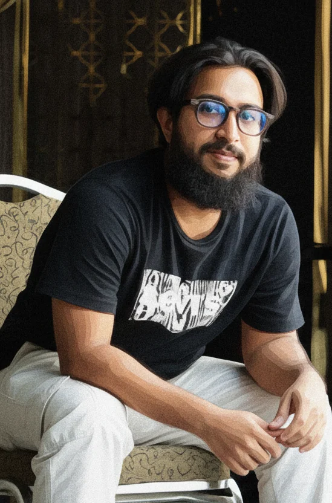

About
The Story Behind the Lens
Visual Storyteller. Digital Strategist. Humanitarian.

My Journey
Where logic meets emotion
My professional journey is built on a unique intersection of logic and emotion. While I graduated with a degree in Computer Science and Engineering (CSE), mastering the technical language of code and systems, my true passion has always been visual storytelling. Since 2017, I have dedicated myself to capturing the human experience through photography and videography.
This dual background allows me to approach creative work with a strategic mindset. I don’t just create content; I build digital ecosystems that amplify voices and drive engagement.
My commitment to the humanitarian sector was forged on the ground in Cox’s Bazar. Starting as a volunteer with OBAT Helpers, I learned firsthand the resilience of displaced communities. I later served as a Social Media Manager for the Humanitarian Assistance Program (HAP), where I developed digital strategies to highlight critical aid efforts.
Currently, as a Media Officer at Community Partners International (having initially joined as a Media Consultant), I lead comprehensive media initiatives. From documenting field operations to crafting donor-facing narratives, my goal is to bridge the gap between resources and needs through compelling visual advocacy.
Experience
Professional Timeline
-
Community Partners International
CurrentMedia Officer
Leading media strategy and content production. Documenting field operations, managing press relations, and producing high-impact visual content for donor reporting and international advocacy.
-
Humanitarian Assistance Program
Social Media Manager
Managed digital presence, community engagement strategies, and content calendars to highlight ongoing humanitarian efforts and success stories.
-
OBAT Helpers
Volunteer
Grassroots volunteering that built the foundation for my commitment to serving displaced communities. Assisted in field logistics and community support initiatives.
What I Do
Services
From the first field visit to the final campaign post: one person who can plan the story, shoot it, write it and get it seen.
01
Documentary film & videography
Short documentaries, field production, interviews and post-production, from story planning to colour and final edit.
02
Humanitarian photography
Field photography of people and programmes for impact stories, donor reporting, reports and social media.
03
Communications & storytelling
Impact stories, copywriting and donor-facing narratives that turn field realities into clear, human stories.
04
Social media & digital strategy
Content calendars, community engagement and campaign planning that grow visibility for a cause.
05
Campaign & print design
Posters, signage, banners and event materials for public health and WASH campaigns.
06
Media management
Coordinating media initiatives, documenting field operations and supporting press relations.
How I Work
Dignity before the shot
The people in these photographs and films trusted me with their stories. These are the principles I work by.
-
01
Consent first
I explain how images will be used and ask permission before I photograph or film anyone, and I respect a “no”.
-
02
Dignity over drama
I show people as capable and whole, not as symbols of suffering, and I avoid images that exploit pain.
-
03
Protecting children
I follow safeguarding practice with children and never share details that could identify where a child lives.
-
04
Honest storytelling
I don’t stage or alter scenes to change their meaning, and I let people tell their stories in their own words.
Technical Toolkit
Craft, backed by a technical foundation
My background in CSE provides a strong technical foundation for my creative work, allowing me to master complex post-production workflows and design tools with ease.
Video & Motion
- Adobe Premiere Pro
- DaVinci Resolve (Color)
- Post-Production Workflow
Graphics & Design
- Adobe Illustrator
- Canva & Figma
- Brand Identity Design
Photo Editing
- Adobe Photoshop
- Lightroom Classic
- High-End Retouching